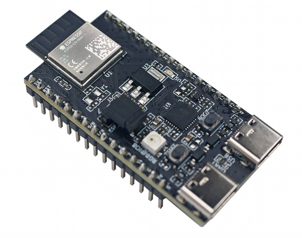

Introduction to RTOS for ML
Pascal Bodin

Document history
| When | What |
|---|---|
| 20-Aug-2024 | GPIO output: exercise 03 |
| 18-Aug-2024 | GPIO input: exercise 02 |
| 17-Aug-2024 | App architecture introduced by exercise 01 |
| 16-Aug-2024 | GPIO section |
| 07-Aug-2024 | Target is now EFR32MG24 |
| 30-Jul-2024 | First practice session |
| 29-Jul-2024 | Introductory part |
Licenses
Presentation
Creative Commons Attribution-NonCommercial-ShareAlike 4.0 International License
Source code
Credits
- reveal.js - Copyright (C) 2020 Hakim El Hattab
- Freepik from www.flaticon.com
- Electricity icons created by Dewi Sari - Flaticon
How to navigate
- Use the right and left arrows (in bottom right corner)
- Overview: press "O" letter - navigate with arrow keys - "ESC" or click on slide to exit
- Full screen: press "F" letter - "ESC" to exit
Contents
Foreword
Who am I?
-
Independent consultant and freelancer - connected devices


- Beforehand: software engineer, project leader, team manager, co-founder, technical expert
- McDonnell Douglas Informations Systems, Digital Equipement Corporation (DEC), Orange
- Co-founded (and closed down) two companies
- First connected devices project: in 1990
More information
Goal
- Understand how to develop, run and debug embedded applications
- Understand the benefits (and drawbacks) of Real-Time Operating Systems
- Understand how to get data from sensors and how to store it
Non-goal
- How to develop embedded ML applications
Needs of ML applications

Technical domains

Closer look - Computer Science

Closer look - Communication


Closer look - Electronics
Introduction
Hardware progress
1982 - Cray X-MP

- World most powerful computer
- 0.94 GFLOPS (giga floating-point operations per second)
- Price: around US$15 million (would be US$45 million in 2022)
2022 - iPhone 14

- A15 Bionic chip with 5-core GPU: 1.7 TFLOPS
- Price: US$800
In 40 years:
- Processing power multiplied by around 1,700
- Cost divided by around 56,000
What do the years to come have in store?!
Embedded applications
1969 - The computer that made it possible to land on the Moon

- Weight: aroung 32 kg (without the user interface)
- Power supply: 28 V CC - 70 W
- Permanent memory: 36 Kwords
- Erasable memory: 2 Kwords
- Clock: 1 MHz (83 kHz instruction cycle time)
- Simple operating system, with priority handling
Compared to current configurations:
- Very little memory
- Very little processing power
Yet it allowed to bring human beings to the Moon.
It's not because you don't have a lot of memory and processing power that you can't develop great applications 🙂
A modern microcontroller with similar processing power:

- Flash memory: 128 Ko
- RAM: 8 Ko
- Clock: up to 64 MHz
- Power consumption: 30 mW (microcontroller alone)
- Power consumption in sleep mode: 0,1 μW
- Price: around US$3.00
Microcontroller board
Reminders - Memory content retention
- Volatile memory: content is lost when the system turns off - RAM
- Non-volatile memory: content is retained - Flash, EEPROM
Reminders - Memory hierarchy
From most rapid access to slowest access:
- Registers - inside the CPU
- Cache - inside and outside the CPU - usually not present in MCU
- Main memory
- Disk - magnetic or flash
- Registers: RAM
- Cache: RAM
- Main memory: RAM + flash
Microcontroller
- A computer in a chip:
- Central Processing Unit (CPU)
- Read-only memory (Flash memory)
- Read/write memory (RAM - Random Access Memory)
- Clocks
- Energy management
- Peripherals and interfaces:
- Analog I/O
- Digital I/O
- Timers
- Serial interfaces
- etc.
An example of MCU architecture:

Board architecture

- Microcontroller
- CPU + memory
- Some peripherals (e.g. timers)
- Interfaces (e.g. serial interfaces, GPIO)
- Power system
- Wireless communication
- Optional
- May be hosted by the microcontroller (Wi-Fi, Bluetooth, LoRa, etc.)
- Optionally:
- Additional interfaces
- Peripherals (e.g. sensors)
- Positioning (e.g. GNSS)
- User interface
- Data storage
- Not depicted: optional, additional memory, outside of the microcontroller
Important board/microcontroller characteristics?
- Depend on the target application!
- Example:
- General Purpose Input/Output (GPIO)
- Serial links
- Serial buses (SPI, I2C, etc.)
- Analog to Digital Converters (ADC), Digital to Analog Converters (DAC)
- Analog blocks
- Instruction cycle time
- Memory (size, type, expandable...)
- Registers size (8/16/32 bits)
- Packaging
- etc.
Other important characteristics: hardware tools
- Development board
- Programmer, debugger
- Open source hardware
Other important characteristics: software tools
- Cross-compilation toolchain
- Integrated Development Environment (IDE)
- Open source software
Other important characteristics: support
- Professional support
- Active community (forums, examples...)
Some common microcontroller families
Arm
- UK company created in 1990
- There isn't any Arm microcontroller
- Arm provides Intellectual Property (IP) blocks, under a licensing agreement
- Among these blocks: RISC microcontrollers cores
- For the IoT (low power, low cost): Cortex-M family
Shipped processors
- end 2020: 180 billions
- including 6.7 billions in Q4 2020
- including 4.4 billions of Cortex-M in Q4 2020
- Sep-2022: more than 250 billions
Arm processor architecture is more popular than any other architecture.
Some Cortex-M licensees:
Arm cores

Instruction sets

Provided elements

Example: STMicroelectronics - STM32 family

STM32L073RZ


- Price: US$6.95 (unit) - US$2.66 (10,000)
Development board

Price: US$13
STM32WL55


- Price: US$9.25 (unit) - US$4.54 (10,000)
Development board

US$42
Example: Silicon Labs - EFR32 family

- Bluetooth: EFR32BG21, EFR32BG22, EFR32BG24, EFR32BG26, EFR32BG27
- Wi-Fi: SiWx915, SiWx917, RS9116, WF200
- Thread: EFR32MG12, EFR32MG13, EFR32MG21, EFR32MG24
- Etc.
EFR32MG24

- Price: around US$7 (unit)
Development board

US$79
Espressif - ESP family
Espressif family
- ESP32-P Series - high-power RISC-V dual-core + low-power single-core
- ESP32-S Series - Xtensa LX7 dual-cor or single-core - Wi-Fi, BLE
- ESP32-C Series - RISC-V dual-core or single-core - Wi-Fi (2.4 GHz / 5 GHz), BLE, IEEE 802.15.4
- ESP32-H Series - RISC-V single-core
- ESP32 Series - Xtensa LX6 dual-core or single-core - Wi-Fi, Bluetooth, BLE
ESP32-C6FH4

Some of the features
- High-power RISC-V processor - clock up to 160 MHz
- Low-power RISC-V processor - clock up to 20 MHz
- L1 cache: 32 KB
- ROM: 320 KB
- Hig-power SRAM: 512 KB
- Low-power SRAM: 16 KB
- Flash: 4 MB
- Price: US$2.05
Development board
- Price: US$7.96
Software development - part 1
Cross development

Reminders
Usual development


Then you run the executable file.
Toolchain: compiler + linker + other utilities
Cross development for microcontroller board
Transferring the executable file to the microcontroller board can be done in several ways:
- Over a debug interface
- Over a serial link while the microcontroller runs a bootloader
- Over a wireless connection while the microcontroller runs a bootloader
- Etc.
Debugging
- The development computer can control the execution of the application running in the microcontroller
- Requires a debug interface on the microcontroller board and a serial link
- Every microcontroller manufacturer: full development environnement
- Often free
- Often based on Open Source software (Eclipse, gcc, openOCD, etc.)
Exercise 01
Build and run an Hello World application for the EFR32xG24 Dev Kit
EFR32MG24
EF32xG24 Dev Kit

Reference documentation
Development environments
Several possibilities:
- Simplicity Studio v5 (SSv5) - based upon Eclipse IDE
- VS Code + extension
- ...
We will use SSv5.
SSv5

Exercise 01
- Using git, clone the
RTOS-presentationGitHub repository - Follow the instructions provided by the
RTOS-presentation/exercises/01-HelloWorld/README.mdfile.
Peripherals
Peripheral: a piece of equipment that can be connected to the microcontroller or to the microcontroller board.
Sensors
- Pressure
- Temperature
- Light level
- Magnetic field
- Gas flow
- Tilt
- Acceleration
- Contact
- etc.
Actuators
- Relay
- Motor
- Stepper motor
- Servomotor
- etc.
Other peripherals
- Printer
- Display
- OBD connector (On-Board Diagnostics)
- RFID tag reader
- Computer (!)
- etc.
Interfaces
Interface: a means (hardware and software) of connecting a peripheral to the microcontroller or to the microcontroller board.
GPIO (General Purpose digital Input Output)
- Microcontroller pin which can handle a digital signal
- Signal voltage for bit value 0 is 0 V
- Signal voltage for bit value 1 depends on microcontroller. Usually: supply voltage (e.g. 3.3 V)
- Can be configured either as an input or as an output (with some different modes)
- On a microcontroller: usually several "ports" of GPIOs
- Ports are labelled, by a letter or by a number
- In a given port, each GPIO is numbered
For instance: PA00 to PA07, PB00 to PB03, PC00 to PC09 and PD00 to PD05.
GPIO as an output

- When PD02 is at 1 (i.e. VMCU), the LED is off, as no current can flow through it
- When PD02 is at 0 (i.e. 0 V), the LED is on, as some current can flow through it
Easy, isn't it? 🙂
Physical world has some constraints - 1/2
- Current through the LED should not be greater than a value depending on the LED (for instance: 1.5 mA)
- A resistor in series with the LED can limit the current. Resistor value is given by Ohm's law:
R137 = VMCU / Imax - We have
VMCU = 3.3 Vand decide onImax = 1.5 mA - ⇒
R137 = 2.2 kΩ
Physical world has some constraints - 2/2
The LED current flows into the microcontroller. A GPIO can't accept more than a given value (provided by the microcontroller data sheet).
For the EFR32MG24, maximum value is 50 mA. As R137 limits the current to 1.5 mA, we are OK.
Another limit: total maximum value for all GPIO pins. For the EFR32MG24: 200 mA.
Note: the GPIO is configured as an output, but the current flows INTO the microcontroller.
GPIO as an input - 1/5

- When the switch is closed, PB02 is set to 0 (GND = 0 V)
- When the switch is open, PB02 is not set. It is "floating"
How to set PB02 to 1 when the switch is open?
GPIO as an input - 2/5

- R140 ensures that PB02 is set to 1 when the switch is open
- It is named pullup resistor
- The resistor value is large enough to get a low current through it (but beware: it is not null)
- If the switch was connected to VMCU instead of GND, we would use a pulldown resistor
GPIO as an input - 3/5
- The board schematic shows an additional resistor, R141. What is its purpose?
- If the GPIO was configured as an output (bug), set to 1, and the switch was closed: short-circuit
- R141 limits the current in such a case
GPIO as an input - 4/5
- The board schematic shows a capacitor, C142. What is its purpose?
What really happens when closing a switch

Vertical: 1 V / division - Horizontal: 1 ms / division
GPIO as an input - 5/5
- C142 "fills in" the gaps / filters out the highest frequencies
- ⇒ debouncing
- Debouncing can also be done in software
Voltage and current adaptation
If peripheral voltage is different from microcontroller voltage, or if it requires more current than what the microcontroller can provide, or if regulations require some specific protections, adaptation is required:
- Optocoupler
- Relay
- Etc.
Exercise 02
Display a message when a button is pushed or released
- Follow the instructions provided by the
RTOS-presentation/exercises/02-GpioInput/README.mdfile.
Exercise 03
Make a LED blink
- Follow the instructions provided by the
RTOS-presentation/exercises/03-GpioOutput/README.mdfile.